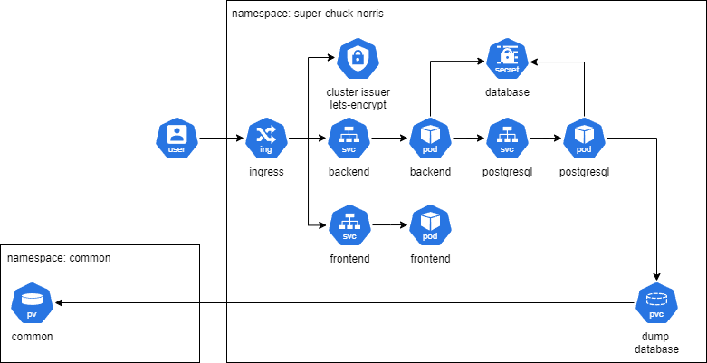

Kubernetes documentation
Technical stack
- Container orchestration: Kubernetes (kubeadm)
- OS: Ubuntu ARM64
- GitOps: FluxCD v2 (flux-operator)
- Package manager: Timoni (module OCI)
- Secrets: Sealed Secrets (Bitnami)
- Database: CloudNativePG
Requirements
- ARM64 nodes (all container images are built for
linux/arm64) - A DNS entry for
chuck.filhype.ovh - cert-manager + ClusterIssuer
lets-encrypt - nginx Ingress Controller
- Sealed Secrets controller in
kube-system - CloudNativePG cluster
postgresin namespacepostgres - FluxCD v2 (flux-operator) deployed in namespace
operators
Cluster nodes
| Hostname | Role | IP |
|---|---|---|
| hp | control-plane | 192.168.1.23 |
| leeson-desktop | worker | 192.168.1.26 |
| leeson-jetson2 | worker | 192.168.1.25 |
GitOps flow (FluxCD + Timoni)
Architecture
GitHub Flux (operators ns) Cluster
────────────────────── ─────────────────── ──────────────────────
iac-chucknorris-backend → GitRepository → chuck-norris ns
deploy/ → Kustomization → Namespace
configmap.yaml ConfigMap
deployment.yaml Deployment
service.yaml Service
ingress.yaml Ingress
auth0-sealed-secret Secret (auth0)
db-sealed-secret Secret (db)
Continuous Deployment pipeline
1. Dev push → super-chuck-norris-backend (main)
↓
2. GitHub Actions: build native ARM64 image
→ push docker.io/leeson77/chuck-norris-backend:<sha>-snapshot-arm64
↓
3. GitHub Actions job `update-iac`:
→ checkout filhype-organization/iac-chucknorris-backend
→ sed deploy/deployment.yaml: update image tag
→ git commit "chore: deploy backend image <sha>-snapshot-arm64 [skip ci]"
→ git push
↓
4. Flux GitRepository: détecte le nouveau commit (interval: 1m)
↓
5. Flux Kustomization: applique deploy/ sur le cluster (interval: 5m)
↓
6. K8s rolling-update: nouveau pod arm64 en ~20ms (native Quarkus)
Modification des templates Timoni
Quand les fichiers CUE changent (templates/, timoni.cue, values.cue) :
1. Dev push → iac-chucknorris-backend (main)
↓
2. GitHub Actions job `publish-module`:
→ push OCI module docker.io/leeson77/chuck-norris-backend-timoni:<tag>
↓
3. GitHub Actions job `render-manifests`:
→ timoni build → réécrit deploy/{configmap,deployment,service,ingress}.yaml
→ préserve le tag d'image courant dans deployment.yaml
→ git commit "chore: re-render manifests from timoni module [skip ci]"
↓
4-6. Même flux Flux que ci-dessus
Premier déploiement (bootstrap)
Prérequis secrets GitHub
Ajouter le secret IAC_REPO_TOKEN dans le repo super-chuck-norris-backend :
GitHub → super-chuck-norris-backend → Settings → Secrets → New repository secret
Name: IAC_REPO_TOKEN
Value: <GitHub PAT avec accès contents:write sur iac-chucknorris-backend>
Appliquer les ressources Flux
Les ressources FluxCD sont dans flux/ du repo iac-chucknorris-backend.
Elles sont déjà appliquées sur le cluster. Pour les ré-appliquer manuellement :
kubectl apply -f infra/k8s/backend/flux/gitrepository.yaml
kubectl apply -f infra/k8s/backend/flux/kustomization.yaml
Vérifier le statut
# État de la source Git
kubectl get gitrepository iac-chucknorris-backend -n flux-system
# État de la réconciliation
kubectl get kustomization chuck-norris-backend -n flux-system
# Ressources déployées
kubectl get all -n chuck-norris
Forcer une réconciliation immédiate
kubectl annotate gitrepository iac-chucknorris-backend -n flux-system \
reconcile.fluxcd.io/requestedAt="$(date -u +%Y-%m-%dT%H:%M:%SZ)" --overwrite
Initialisation de la base de données
La table Joke doit être créée avant le premier démarrage du backend
(Hibernate est en mode validate — il vérifie le schéma sans le créer).
# Port-forward vers le pod PostgreSQL
kubectl port-forward -n postgres postgres-1 5432:5432
# Injecter le dump SQL
psql -h localhost -p 5432 -U app -d app < /path/to/dump.sql
Une fois le schéma injecté, le pod redémarre automatiquement et passe en Running.
Structure du module Timoni
Le module se trouve dans le repo iac-chucknorris-backend :
infra/k8s/backend/
├── timoni.cue # Configuration du module (instance + labels communs)
├── values.cue # Schéma + valeurs par défaut
├── prod-values.cue # Surcharges de production (pas de secrets)
├── templates/
│ ├── configmap.cue # ConfigMap Quarkus (variables d'env non-sensibles)
│ ├── deployment.cue # Deployment + probes + securityContext
│ ├── service.cue # ClusterIP service
│ └── ingress.cue # Ingress nginx + TLS cert-manager
├── deploy/ # Manifestes K8s pré-rendus → Flux applique ce dossier
│ ├── namespace.yaml
│ ├── configmap.yaml
│ ├── deployment.yaml # Tag d'image mis à jour automatiquement par le CI
│ ├── service.yaml
│ ├── ingress.yaml
│ ├── auth0-sealed-secret.yaml
│ ├── db-sealed-secret.yaml
│ └── kustomization.yaml
└── flux/ # Ressources FluxCD (appliquées une fois manuellement)
├── gitrepository.yaml
└── kustomization.yaml
Images Docker
| Image | Registry | Architecture |
|---|---|---|
leeson77/chuck-norris-backend |
Docker Hub | ARM64 |
leeson77/chuck-norris-backend-timoni |
Docker Hub | N/A (OCI module) |
Format du tag backend : <short-sha>-snapshot-arm64 (ex: 3f04235-snapshot-arm64)
Configuration Auth0
La configuration OIDC non-sensible est dans le ConfigMap chuck-norris-backend-config.
Le secret (QUARKUS_OIDC_CREDENTIALS_SECRET) est chiffré dans auth0-sealed-secret.yaml
et déchiffré automatiquement par le contrôleur Sealed Secrets.
| Propriété | Valeur |
|---|---|
| Client ID | 2GSRAJdfhRYURWjwlnYwJlJN4J9cEi4o |
| Issuer | https://dev-lesson.eu.auth0.com/ |
| Auth Server URL | https://dev-lesson.eu.auth0.com |
| Audience | chuck-norris-api |
| Application type | service |
| Role claim path | scope |
Architecture Diagram
